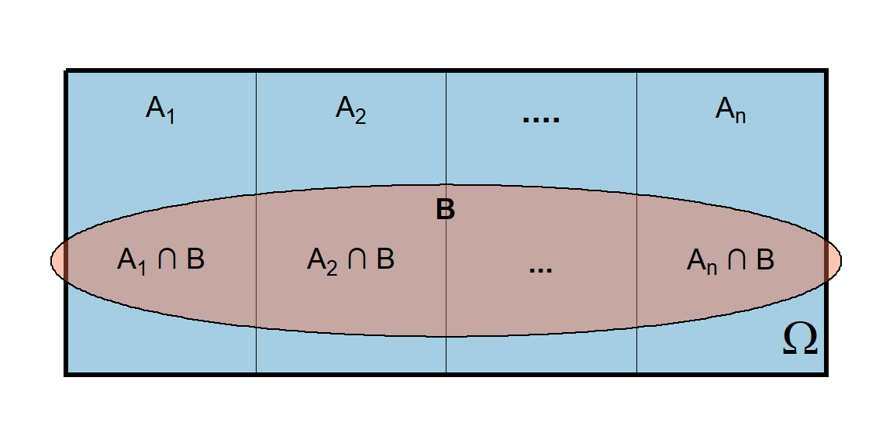
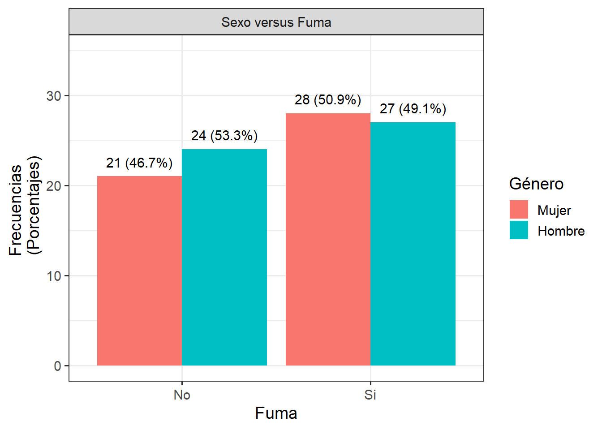

TEORÍA DE PROBABILIDAD (con R)
Probabilidad condicional e independencia

About these lecture notes. These lecture notes cover conditional probability, the multiplication rule, the law of total probability, Bayes’ theorem, and independence of events, with theoretical explanations, examples, and applications using R.
1 Introducción
1.0.1 Propósito
En este documento comenzaremos a desarrollar los conceptos fundamentales de probabilidad condicional e independencia, pilares esenciales en el estudio formal de la teoría de la probabilidad y base para comprender aplicaciones más avanzadas en estadística y análisis de datos.
1.0.2 Pre-requisitos
Antes de avanzar, es importante que los lectores tengan claros ciertos conocimientos previos que servirán como base conceptual. En particular, se asume que el lector ya domina los siguientes temas:
Experimentos.
Espacio muestral y eventos.
Teoría de conjuntos.
Técnicas fundamentales de conteo (principio de la multiplicación, permutaciones, combinaciones).
\(\sigma\)-álgebras.
Conceptos introductorios de la teoría de la probabilidad.
1.0.3 Material de ayuda
Para repasar o reforzar estos contenidos previos, se recomienda revisar los siguientes enlaces:
Una vez comprendidos estos elementos, estaremos en condiciones de abordar con rigor y claridad el análisis de eventos condicionados y su relación con la independencia de sucesos.
2 Probabilidad condicional
Sean \(A\) y \(B\) dos eventos de un espacio muestral \(\Omega\ne \emptyset\). La probabilidad condicional del evento \(A\) dado el evento \(B\), simbolizada por \(P(A/B)\), se define como \[P(A/B)\;=\; \frac{P(A \cap B)}{P(B)} \;=\; \frac{\# (A\cap B)}{\# B}, \quad \mbox{si $P(B) > 0$}\]
El código para escribir la expresión anterior es:
$$P(A/B)\;=\; \frac{P(A \cap B)}{P(B)} \;=\; \frac{\# (A\cap B)}{\# B}, \quad \mbox{si $P(B) >0$}$$3 Teorema de multiplicación para dos eventos
Si \(A\) y \(B\) son dos eventos de un espacio muestral \(\Omega\ne \emptyset\) y si \(P(B\cap A)>0\), entonces \[P(B \cap A)\; = \; P(B/A)\, P(A) \;=\; P(A/B) \,P(B)\]
El código para escribir la expresión anterior es:
$$P(B \cap A)\; = \; P(B/A)\, P(A) \;=\; P(A/B) \,P(B)$$4 Teorema de multiplicación para \(n\) eventos
Si \(A_1,\ldots, A_n\) son eventos de un espacio muestral \(\Omega\ne \emptyset\) y si \(P(A_1\cap\cdots\cap A_n)>0\), entonces
\[P(A_1\cap\cdots\cap A_n)\; =\; P(A_1) \cdot P(A_2/A_1) \cdot P(A_3/A_1\cap A_2)\cdots P(A_n/A_1\cap \cdots \cap A_{n-1})\]
Comentario 1
Como podemos observar claramente, hemos considerando que \(A_1\) es el evento que sucede primero, luego \(A_2\), posteriormente \(A_3\), y así sucesivamente hasta que sucede el último evento, que en nuestro caso es \(A_n\).
Comentario 2
En particular, obtenemos que:
Si \(n=2\), se tiene que \[P(A_1\cap A_2)\; =\; P(A_1) \cdot P(A_2/A_1) \]
Si \(n=3\), se tiene que \[P(A_1\cap A_2\cap A_3)\; =\; P(A_1) \cdot P(A_2/A_1) \cdot P(A_3/A_1\cap A_2) \]
Si \(n=4\), se tiene que \[P(A_1\cap A_2\cap A_3\cap A_4)\; =\; P(A_1) \cdot P(A_2/A_1) \cdot P(A_3/A_1\cap A_2) \cdot P(A_4/A_1\cap A_2\cap A_3)\]
5 Teorema de multiplicación para \(n\) eventos: como medida
5.0.1 Teorema: enunciado
Sea \((\Omega,\mathcal{F}, P)\) un espacio de probabilidad.
Inciso (a)
Para cada \(A\in\mathcal{F}\) con \(P(A)>0\), \(P(\cdot /A)\) es una medida de probabilidad sobre \((\Omega,{\mathcal{F}})\) que está concentrada en \(A\), es decir, \(P(A/A)=1\). En especial, \(P(\cdot /A)\) es una medida de probabilidad sobre \((A, \mathcal{F}\cap A)\), en donde \(\mathcal{F}\cap A\) es una \(\sigma\)-álgebra en \(A\), definida por \(\mathcal{F}\cap A:=\{B\cap A \,/ \,B\in\mathcal{F}\}\).
Inciso (b)
Para \(A_1,\ldots ,A_n\in\mathcal{F}\) se cumple
\[P(A_1\cap\cdots\cap A_n)\; =\; P(A_n) \, \prod\limits_{i=1}^{n-1} P\Big(A_i \, \Big/ \bigcap\limits_{j=i+1}^n A_j \Big),\]
con las correspondientes convenciones si \(P(A_1\cap\cdots\cap A_n)=0\).
5.0.2 Teorema: demostración
Inciso (a)
Para cualquier \(B\in\mathcal{F}\), tenemos
\[P(B/A) \; = \; \frac{P( B \cap A)}{P(A)} \; \geq \; \frac{P(\emptyset)}{P(A)} \; = \; 0 \quad \mbox{y}\]
\[P(\Omega /A)\; = \; \frac{P( \Omega \cap A)}{P(A)} \; = \; \frac{P(A)}{P(A)}\; = \; 1\; = \; \frac{P(A\cap A)}{P(A)} \; = \; P(A/A).\]
Si \(A_1, A_2, \ldots\in\mathcal{F}\) es una sucesión de eventos disyuntos dos a dos, entonces, \(A \cap A_1 , A\cap A_2, \ldots\) también es una sucesión de eventos disyuntos dos a dos. Por consiguiente,
\[\begin{eqnarray} P \left(\bigcup\limits_{i=1}^\infty A_i \Big/A \right) \; = \; \frac{P\left(\bigcup\limits_{i=1}^\infty (A_i \cap A) \right)}{P(A)} \; = \; \sum\limits_{i=1}^\infty \frac{P(A_i\cap A)}{P(A)}\; = \; \sum\limits_{i=1}^\infty P(A_i/A). \nonumber \end{eqnarray}\]
Por tanto, la aplicación \(P(\cdot /A):\mathcal{F}\longrightarrow \mathbb{R}\) satisface los 3 axiomas de Kolmogorov. O sea, que \(P(\cdot /A)\) es una medida de probabilidad sobre \((\Omega, \mathcal{F})\), que está concentrada sobre \(A\). Observando \(P(\cdot /A)\) restringida sobre \(\mathcal{F}\cap A\), se obtiene que \(P(\cdot /A)\) es una medida de probabilidad sobre \((A,\mathcal{F}\cap A)\).
Inciso (b)
Si \(P(A_i\cap\cdots\cap A_n)=0\), entonces, hacemos uso de la convección
\[P(A_n)\prod\limits_{i=1}^{n-1}P \left(A_i \Big/\bigcap\limits_{j=i+1}^n A_j\right)=0.\]
Sea ahora \(P(A_1\cap\cdots\cap A_n)>0\). Entonces,
\[\begin{eqnarray} \prod\limits_{i=1}^{n-1}P \left(A_i \Big/\bigcap\limits_{j=i+1}^n A_j\right) \;=\;\prod\limits_{i=1}^{n-1}\frac{P \left(\bigcap\limits_{j=i}^n A_j\right)}{P \left(\bigcap\limits_{j=i+1}^n A_j\right)}\; = \; \frac{P(A_1\cap\cdots\cap A_n)}{P(A_n)}.\nonumber \end{eqnarray}\]
Multiplicando por \(P(A)\), obtenemos la conclusión.
6 Teorema de la probabilidad total
Enunciado
Sea dada una descomposición finita o enumerable \(A_1,A_2,\ldots\) de \(\Omega\), es decir, \(A_1, A_2, \ldots \in{\mathcal F}\) son disyuntos dos a dos y \(\bigcup\limits_{n=1}^{\infty} A_n=\Omega\). Entonces, para cada \(B\in{\mathcal F}\), se tiene que
\[P(B)=\sum\limits_{n=1}^{\infty} P(B/A_n)\, P(A_n)\]
Para el caso finito, en la figura de abajo, se ilustra la organización de los eventos mencionados.
Demostración
Debido a que los conjuntos \(A_1, A_2, \ldots\) son disyuntos dos a dos, entonces, los conjuntos \(B\cap A_1, B\cap A_2, \ldots\) también son disyuntos dos a dos. Además,
\[\bigcup\limits_{n=1}^{\infty}(B\cap A_n)\;= \; B\cap\bigcup\limits_{n=1}^{\infty} A_n \;= \; B\cap\Omega \; =\; B.\]
Por tanto,
\[\begin{align*} P(B) \; = \; P\left(\bigcup\limits_{n=1}^{\infty}(B\cap A_n) \right)\; = \; \sum\limits_{n=1}^{\infty}P(B\cap A_n) \;= \; \sum\limits_{n=1}^{\infty}P(B/A_n)\, P(A_n). \end{align*}\]
Y así queda demostrado el teromea.
7 Teorema de Bayes
Enunciado
Sea \(A_1, A_2,\ldots\) una descomposición finita o enumerable de \(\Omega\). Entonces, para cada evento \(B\) con \(P(B)>0\) y para todo \(n\in{\mathbb N}\), se tiene
\[ P(A_n/B)=\frac{P(B/A_n)\, P(A_n)}{\sum\limits_{j=1}^{\infty} P(B/A_j) \, P(A_j)}\]
Demostración
Teniendo en cuenta el teorema de la probabilidad total, se tiene que
\[\begin{align*} P(A_n/B) \; = \; \frac{P(B \cap A_n)}{P(B)} \; = \; \frac{P(B/A_n)\, P(A_n)}{P(B)} \; = \; \frac{P(B/A_n)\, P(A_n)}{\sum\limits_{j=1}^{\infty}P(B/A_j)\, P(A_j)}. \end{align*}\]
Y así queda demostrado el teorema.
8 Ejemplo: Bayes
Enunciado
Un editor envía propaganda de un libro de estadística al 70% de los profesores que están a cargo de esa materia. El 40% de aquellos que recibieron la propaganda se decidieron a utilizar el libro. Incluso, el 20% de los que no recibieron la propaganda también utilizarán el libro. ¿Cuál es la probabilidad de que un profesor utilice el libro? Sabiendo que el profesor ha utilizado el libro, ¿cuál es la probabilidad de que haya recibido la propagadanda?
Solución
Sea:
- \(A\): El profesor recibe propaganda
- \(\overline{A}\): El profesor no recibe propaganda
- \(B\): El profesor utiliza el libro
Sabemos:
- \(P(A) = 0.7\). Entonces, \(P(\overline{A}) = 0.3\).
- $P(B|A) = 0.4 $
- \(P(B|\overline{A}) = 0.2.\)
Queremos hallar \(P(B)\) y \(P(A | B)\). Usamos la regla de la probabilidad total y el terorema de Bayes:
\[\begin{eqnarray*} P(B) &=& P(B|A)P(A) + P(B|\overline{A})P(\overline{A}) \\ &=& (0.4)(0.7) + (0.2)(0.3) = 0.28 + 0.06 = 0.34 \\ \\ P(A | B) &= &\frac{P(A\cap B)}{P(B)} = \frac{0.28}{0.34} = 0.8235 \end{eqnarray*}\]
Respuesta: La probabilidad de que un profesor utilice el libro es 0.34. Además, sabiendo que el profesor ha utilizado el libro, la probabilidad de que haya recibido la propagadanda es aproximadamente 0.82.
Diagrama de árbol de probabilidades
A continuación, se presenta un diagrama de árbol que ilustra las probabilidades condicionales y sus respectivos caminos asociados a los eventos de recibir o no la propaganda, y utilizar o no el libro.
Diagrama de árbol con intersecciones
Vamos a representar gráficamente las intersecciones de eventos:
\[ A \cap B,\quad A \cap \overline{B},\quad \overline{A} \cap B,\quad \overline{A} \cap \overline{B} \]
Estas intersecciones corresponden a los productos de probabilidades en cada camino del árbol:
\(P(A \cap B) = P(A) \cdot P(B|A) = 0.7 \cdot 0.4 = 0.28\)
\(P(A \cap \overline{B}) = 0.7 \cdot 0.6 = 0.42\)
\(P(\overline{A} \cap B) = 0.3 \cdot 0.2 = 0.06\)
\(P(\overline{A} \cap \overline{B}) = 0.3 \cdot 0.8 = 0.24\)
A continuación, se incluye el diagrama con estas probabilidades explícitas al final de cada rama.
9 Independencia de eventos
9.0.1 Independencia estocástica
Dos eventos \(A\), \(B\) de un espacio muestral \(\Omega\ne \emptyset\) se llaman (estocásticamente) independientes si y sólo si \(P(A/B)=P(A)\) y son dependientes en cualquier otro caso. Es decir, el evento \(A\) es independiente del evento \(B\) si la probabilidad de \(A\) no se ve afectada por la ocurrencia o no de \(B\).
9.0.2 Independencia completa
Se dice que \(n\) eventos \(A_1,\ldots,A_k\in {\mathcal F}\) son (completamente) independientes, si para todo \(1\leq j_1< j_2<\cdots <j_k\leq n\), con \(2\leq k\leq n\), se tiene que
\[P(A_{j_1} \cap A_{j_2}\cap \cdots \cap A_{j_k}) \;= \;P(A_{j_1}) \cap P(A_{j_2}) \cap \cdots \cap P(A_{j_k})\]
Comentario 1.
Si \(P(A_{j_1} \cap A_{j_2}\cap \cdots \cap A_{j_k}) >0\), entonces,
\[P\Big(A_{j_i} \Big/ \bigcap\limits_{m=1 \atop m\ne i}^k A_{j_m} \Big) \; =\; P(A_{j_i}), \quad \text{para todo $i\in \{1, \ldots, n\}$. }\]
Comentario 2.
La independencia completa implica que
\(P(A_1 \cap \cdots A_n) = P(A_1) \cdots P(A_n)\),
\(P(A_i \cap A_j)=P(A_i)\, P(A_j)\), para todo \(i, j\in \{1, \ldots, n\}\) con \(i\ne j\). Esta es la llamada independencia dos a dos.
Ni (a) ni (b) solas, con \(n>2\), o (a) y (b) juntas, con \(n>3\), conducen a la independencia completa.
10 Teorema de multiplicación para 2 eventos independientes
Dos eventos \(A\), \(B\) de un espacio muestral \(\Omega\ne \emptyset\) son independientes si y sólo si
\[P(A\cap B)\;= \; P(A) P(B)\]
11 Teorema de multiplicación para \(n\) eventos independientes
Enunciado.
Los eventos \(A_1,\ldots, A_n \in {\mathcal F}\) son (completamente) independientes si y solo si \[P(B_1\cap\cdots\cap B_n)= P(B_1)\cdots P(B_n),\]
para cada posible escogencia de \(B_1\ldots, B_n\), donde \(B_j = A_j\) o \(B_j = \overline{A_j}\), con \(1\leq j \leq n\).
Demostración.
Se deja al lector.
12 Propiedad de los eventos independientes
Sean \(A\), \(B\) eventos de un espacio muestral \(\Omega\ne \emptyset\). Entonces, las siguientes cuatro proposiciones son equivalentes:
\(A\) y \(B\) son independientes.
\(\;A\) y \(\overline{B}\) son independientes.
\(\overline{A}\) y \(B\) son independientes.
\(\;\overline{A}\) y \(\overline{B}\) son independientes.
13 Ejemplo: lanzamiento de dados
Supongamos que se lanzan tres dados.
Calcular la probabilidad de que las caras sean iguales sabiendo que su suma es mayor o igual que 17.
Verifique si los dos eventos involucrados son independientes
Solución parte (a).
Vemos que: el espacio muestral tiene \(w= \#\Omega =216\) elementos y la muestra es de tamaño \(n=3\). Ahora, el evento \(A\) tiene \(a=\#A=6\) elementos (ver tabla de abajo).
| Dado 1 | Dado 2 | Dado 3 | |
|---|---|---|---|
| 1 | 1 | 1 | 1 |
| 44 | 2 | 2 | 2 |
| 87 | 3 | 3 | 3 |
| 130 | 4 | 4 | 4 |
| 173 | 5 | 5 | 5 |
| 216 | 6 | 6 | 6 |
Además, \(B\) tiene \(b=\#B=4\) elementos (ver tabla de abajo).
| Dado 1 | Dado 2 | Dado 3 | |
|---|---|---|---|
| 180 | 6 | 6 | 5 |
| 210 | 6 | 5 | 6 |
| 215 | 5 | 6 | 6 |
| 216 | 6 | 6 | 6 |
Además, la intersección \(A\cap B\) tiene \(\#(A \cap B)=1\) elemento (ver tabla abajo).
| Dado 1 | Dado 2 | Dado 3 |
|---|---|---|
| 6 | 6 | 6 |
Por lo tanto, sabiendo que B es el evento condicional, la probabilidad pedida es
\[P(A/B)\;=\; \frac{P(A \cap B)}{P(B)} \;=\; \frac{\# (A\cap B)}{\# B} \;=\; \frac{1}{4} \;=\; 0.25\]
Es decir, al lanzar tres dados, la probabilidad de que las caras sean iguales sabiendo que su suma es mayor o igual que 17 es 0.25.
Solución parte (b).
Los eventos \(A\) y \(B\) no son independientes porque \[P(A \cap B)=\frac{1}{216}, \qquad P(A)=\frac{6}{216}, \qquad P(B)=\frac{4}{216}, \qquad P(A\cap B)\ne P(A)\cdot P(B)\]
14 Ejemplo 2: Bolas
Una caja contiene 6 bolas rojas, 4 grises y 5 azules. Halle la probabilidad de que se extraigan en el orden roja, gris y azul si las fichas:
Se reemplazan.
No se reemplazan.
En ambos caso, verifique si los eventos involucrados son independientes.

Solución.
Hay tres eventos que debemos considerar para el problema:
\(R\) = “roja en la primera extracción”.
\(G\) = “gris en la segunda extracción”.
\(A\) = “azul en la tercera extracción”.
Nos piden calcular \(P(R\cap G \cap A)\). Al aplicar el teorema general de multiplicación para el caso de \(n = 3\) eventos, tenemos:
\[P(R\cap G\cap A)\; =\; P(R) \cdot P(G/R) \cdot P(A/R\cap G)\]
Obsérvese que en la caja hay disponible, inicialmente, \(6 + 4 + 5 = 15\) bolas.
Solución parte (a).
Si el muestreo es con reemplazo, entonces:
\[P(R\cap G\cap A)\; =\; \frac{6}{15} \cdot \frac{4}{15} \cdot \frac{5}{15} \; =\; \frac{8}{225} \; =\; 0.0355\]
En este caso, los eventos son independientes.
Solución parte (b).
Si el muestreo es sin reemplazo, entonces:
\[P(R\cap G\cap A)\; =\; \frac{6}{15} \cdot \frac{4}{14} \cdot \frac{5}{13} \; =\; \frac{4}{91} \; =\; 0.044\]
En este caso, los eventos no son independientes.
15 Ejemplo encuesta: enunciado
Los resultados obtenidos al realizar una encuesta sobre la variable Sexo (a 100 estudiantes universitarios), muestran que hay 49 mujeres y 51 hombres, en los cuales hay 28 mujeres y 27 hombres que fuman.
| No fuma | Sí fuma | |
|---|---|---|
| Femenino | 21 | 28 |
| Masculino | 24 | 27 |
Tenga solo en cuenta los estudiantes que son fumadores y, de ellos, supongamos que se seleccionan cuatro al azar.
- Diga qué tipo de variables son “Sexo” y “Fumar”. Explique.
- Determine la proporción y el porcentaje de mujeres y de hombres en la muestra de los fumadores.
- Construya el diagrama de barras correspondiente para “sexo” vs “fuma”.
- ¿Cuál es la probabilidad de seleccionar dos mujeres y dos hombres?
- Si seleccionan de uno en uno, ¿cuál es la probabilidad de que las dos primeras personas seleccionadas sean mujeres y las dos últimas, hombres.
- ¿Cuál es la probabilidad de seleccionar cuatro mujeres?
- ¿Cuál es la probabilidad de seleccionar tres hombres?
- ¿Cuál es la probabilidad de seleccionar cuatro mujeres y tres hombres?
- ¿Cuál es la probabilidad de seleccionar cuatro mujeres o tres hombres?
- ¿Cuál es la probabilidad de que no seleccionemos hombres?
- ¿Cuál es la probabilidad de que seleccionemos un hombre?
- ¿Cuál es la probabilidad de que seleccionemos dos hombres?
- ¿Cuál es la probabilidad de seleccionar máximo dos hombres?
- ¿Cuál es la probabilidad de seleccionar al menos tres hombres?
- ¿Cuál es la probabilidad de seleccionar máximo dos mujeres?
- Si se seleccionan de uno en uno, ¿cuál es la probabilidad de que los tres primeros estudiantes seleccionados sean mujeres y el último un hombre?
- Si se seleccionan de uno en uno, ¿cuál es la probabilidad de que los dos primeros estudiantes seleccionados sean mujeres, el tercero un hombre y el último, una mujer?
- Si se seleccionan de uno en uno, ¿cuál es la probabilidad de que los cuatro estudiantes seleccionados sean mujeres?
- Si se seleccionan de uno en uno, ¿cuál es la probabilidad de que los dos primeros estudiantes seleccionados sean mujeres?
16 Ejemplo encuesta: solución
16.0.1 Solución parte (a)
La variable Sexo es cualitativa categórica y tiene dos niveles: Femenino y Masculino.
La variable Fumar es cualitativa categórica y tiene dos niveles: Si fuma y No fuma.
16.0.2 Solución parte (b)
Dentro del grupo de los 55 fumadores, las proporciones de mujeres y hombres en la muestra son 0.51 y 0.49, respectivamente. En porcentajes, serían 51% y 49%, respectivamente.
16.0.3 Solución parte (c)
El diagrama solicitado es:

16.0.4 Solución parte (d)
Utilizaremos combinaciones y aplicaremos probabilidad clásica.
La probabilidad de seleccionar dos mujeres y dos hombres es \[P(A)= \frac{(378)(351)}{341055}= 0.3890\]
El código para escribir la expresión anterior es:
$$P(A)= \frac{(378)(351)}{341055}= 0.3890$$ 16.0.5 Solución parte (e)
Utilizaremos permutaciones sin repetición de \(n\) objetos tomados de \(k\) en \(k\).
La probabilidad de que las dos primeras personas seleccionadas sean mujeres y las dos últimas, hombres, es \[P(A)= \frac{(756)(702)}{8185320}=0.0648\]
El código para escribir la expresión anterior es:
$$P(A)= \frac{(756)(702)}{8185320}=0.0648$$ 16.0.6 Solución parte (f)
Utilizaremos combinaciones y aplicaremos probabilidad clásica.
La probabilidad de seleccionar cuatro mujeres es \[P(A)= \frac{20475}{341055}=0.0600\]
El código para escribir la expresión anterior es:
$$P(A)= \frac{20475}{341055}=0.0600$$16.0.7 Solución parte (g)
Utilizaremos combinaciones y aplicaremos probabilidad clásica.
La probabilidad de seleccionar tres hombres es \[P(A)= \frac{(2925)(28)}{341055}=0.2401\]
El código para escribir la expresión anterior es:
$$P(A)= \frac{(2925)(28)}{341055}=0.2401$$ 16.0.8 Solución parte (h)
La probabilidad de seleccionar cuatro mujeres y tres hombres es 0, ya que los eventos “seleccionar cuatro mujeres” y “seleccionar tres hombres” son disyuntos (intersecciones vacías).
16.0.9 Solución parte (i)
Se aplicará el teorema de adición para dos eventos: \[P(A\cup B)= P(A) + P(B) - P(A\cap B)\]
El código para escribir la expresión anterior es:
$$P(A\cup B)= P(A) + P(B) - P(A\cap B)$$Por el inciso (h), la probabilidad de la intersección de los eventos “seleccionar cuatro mujeres” y “seleccionar tres hombres” es cero. Entonces: \(P(A\cup B)= P(A) + P(B)\). De los resultados encontrados en f y g, la probabilidad de seleccionar cuatro mujeres o tres hombres es: \[P(A) = 0.0600 + 0.2401 = 0.3001\]
El código para escribir la expresión anterior es:
$$P(A) = 0.0600 + 0.2401 = 0.3001$$ 16.0.10 Solución parte (j)
Si no se seleccionan hombres, entonces, hemos seleccionado cuatro mujeres. Por lo tanto, por la parte (f), la probabilidad de que no seleccionemos hombres es 0.0600.
16.0.11 Solución parte (k)
Utilizaremos combinaciones y aplicaremos probabilidad clásica.
La probabilidad de seleccionar un hombre es \[P(A)= \frac{(27)(3276)}{341055}=0.2593\]
El código para escribir la expresión anterior es:
$$P(A)= \frac{(27)(3276)}{341055}=0.2593$$ 16.0.12 Solución parte (l)
Al seleccionar dos hombres, también estaremos seleccionando dos mujeres. Por lo tanto, por la parte (d), la probabilidad de que seleccionemos dos hombres es 0.3890.
16.0.13 Solución parte (m)
la probabilidad de seleccionar máximo dos hombres se halla sumando las probabilidades de seleccionar 0, 1 y 2 hombres. Entonces, por las partes (j), (k) y (l), tenemos que \[P(A) = 0.0600 + 0.2593 + 0.3890 = 0.7084\]
El código para escribir la expresión anterior es:
$$P(A) = 0.0600 + 0.2593 + 0.3890 = 0.7084$$16.0.14 Solución parte (n)
El evento “seleccionar al menos tres hombres” es el complemento del evento “seleccionar máximo dos hombres”. Por lo tanto, por la parte (m), la probabilidad pedida es: \[P(\overline {A})= 1- P(A) = 1 - 0.7084 = 0.2916\]
El código para escribir la expresión anterior es:
$$P(\overline {A})= 1- P(A) = 1 - 0.7084 = 0.2916$$16.0.15 Solución parte (o)
la probabilidad de seleccionar máximo dos mujeres es equivalente a la probabilidad de seleccionar al menos tres hombres. Por lo tanto, por la parte (n), la probabilidad pedida es: 0.2916
16.0.16 Solución parte (p)
Utilizaremos permutaciones sin repetición de \(n\) objetos tomados de \(k\) en \(k\).
La probabilidad de que los tres primeros estudiantes seleccionados sean mujeres y el último un hombre es \[P(A)= \frac{(19656)(27)}{8185320}=0.0648\]
El código para escribir la expresión anterior es:
$$P(A)= \frac{(19656)(27)}{8185320}=0.0648$$ 16.0.17 Solución parte (q)
Basicamente, en este inciso, se pide la misma probabilidad formulada en (p). Por lo tanto, la probabilidad de que los dos primeros estudiantes seleccionados sean mujeres, el tercero un hombre y el último, una mujer es 0.0648.
16.0.18 Solución parte (r)
Utilizaremos permutaciones sin repetición de \(n\) objetos tomados de \(k\) en \(k\).
La probabilidad de que los tres primeros estudiantes seleccionados sean mujeres y el último un hombre es \[P(A)= \frac{491400}{8185320}=0.0600\]
El código para escribir la expresión anterior es:
$$P(A)= \frac{491400}{8185320}=0.0600$$ 16.0.19 Solución parte (s)
Como en la dos primeras selecciones aparecen las mujeres, entonces, para en las dos últimas dos posiciones pueden ocurrir alguno de los eventos siguientes:
- “Seleccionar dos hombres”: que es la situación en (e).
- “Seleccionar primero una mujer y luego un hombre”: que es la situación en (p).
- “Seleccionar primero un hombre y luego una mujer”: que es la situación en (q).
- “Seleccionar dos mujeres”: que es la situación en (r).
Por esta razón, la probabilidad de que los dos primeros estudiantes seleccionados sean mujeres es la suma de aquéllas halladas en esos incisos. Es decir, \[P(A) =0.06484 + 0.06484 + 0.06484 + 0.0600 = 0.5787\]
El código para escribir la expresión anterior es:
$$P(A) =0.06484 + 0.06484 + 0.06484 + 0.0600 = 0.5787$$17 Ejemplos (asociación de los temas con la realidad)
17.0.1 Ejemplo: enunciado (baloto)

Baloto es un juego de azar de tipo loto en línea, donde el participante apuesta por un acumulado multimillonario seleccionando cinco números del 1 al 43 (sin repetición) y una súper balota adicional del 1 al 16, a través de una terminal de venta. La apuesta tiene un valor de 6.000 pesos colombianos. Según información actualizada al 27 de julio de 2025 (12:35 a. m.), cerca de 40.000 personas resultaron ganadoras de premios en las modalidades Baloto y Revancha, con un acumulado en juego de 11.400 millones de pesos colombianos para Baloto y 25.600 millones de pesos colombianos para Revancha. Estos y otros detalles pueden consultarse en el sitio web oficial.

El objetivo es determinar el número de posibilidades que tenemos en sacar las 6 balotas con las condiciones descritas anteriormente y hallar algunas probabilidades de interés.
17.0.2 Ejemplo: solución (baloto)
Se deben escoger 6 números. Entonces:
Para el primer número, hay 43 opciones de elegir un número.
Para el segundo número, hay 42 opciones de escogencia, porque no pueden repetirse.
Para el tercer número, hay 41 opciones.
Para el cuarto, hay 40 opciones.
Para el quinto, hay 39 opciones.
Para el sexto 16 opciones.
Para conocer el número total de opciones se aplica el teorema fundamental del conteo: se multiplican las opciones por cada número. Es decir:
# Permutaciones sin reemplazo de 5 números del 1 al 43
permutaciones_5 <- prod(43:39)
# Súper balota del 1 al 16
super_balota <- 16
# Total de combinaciones posibles
total_con_orden <- permutaciones_5 * super_balota
total_con_orden\[43 \cdot 42\cdot 41\cdot 40\cdot 39\cdot 16 \;=\; 1.848´188.160\]
Este resultado corresponde al número de casos posibles, el cual es muy grande, ya que debe seleccionar uno de esa cantidad. Sea \(A\) el evento que representa el hecho de que salió un determinado número en una fecha anterior. La probabilidad de ganarse el baloto dado \(A\) es:
\[P(\mbox{ganar el baloto} / A) = P(\mbox{ganar el baloto}) =\frac{1}{1.848´188.160} = 5.410705\; \times\; 10^{-10} = 0.0005410705\]
prob_ganar_orden <- 1 / total_con_orden
prob_ganar_ordenObservese que:
Los eventos \(A\) y “Ganar el baloto” son independientes.
Es una probabilidad muy pequeña, lo que muestra que es difícil ganarse el baloto, pero…. la esperanza es lo último que se pierde.
18 Ejercicios
Realizar los ejercicios que se indican abajo. Interprete los resultados hallados.
18.0.1 Ejercicio 1
La siguiente tabla representa los resultados obtenidos al realizar una encuesta sobre las variables Financiación y Fumar a unos estudiantes universitarios.
| No fuma | Sí fuma | |
|---|---|---|
| Beca | 6 | 8 |
| Credito | 8 | 8 |
| Otro | 2 | 6 |
De esta información, tenga solo en cuenta los estudiantes que son fumadores. Supongamos que se seleccionan cuatro estudiantes al azar.
- Diga qué tipo de variables son “Financiación” y “Fumar”. Explique.
- Determine la proporción y el porcentaje de los niveles de la variable “Financiación” en la muestra de los fumadores.
- Construya el diagrama de barras correspondiente para “Financiación” vs “fuma”.
- ¿Cuál es la probabilidad de seleccionar dos estudiantes becados y dos no becados?
- Si seleccionan de uno en uno, ¿cuál es la probabilidad de que los dos primeros estudiantes seleccionadas estén becados y los dos últimos, no becados.
- ¿Cuál es la probabilidad de seleccionar cuatro estudiantes becados?
- ¿Cuál es la probabilidad de seleccionar tres estudiantes no becados?
- ¿Cuál es la probabilidad de seleccionar cuatro estudiantes becados y tres no becados?
- ¿Cuál es la probabilidad de seleccionar cuatro estudiantes becados o tres no becados?
- ¿Cuál es la probabilidad de que no seleccionemos estudiantes no becados?
- ¿Cuál es la probabilidad de que seleccionemos un estudiante no becado?
- ¿Cuál es la probabilidad de que seleccionemos dos estudiantes no becados?
- ¿Cuál es la probabilidad de seleccionar máximo dos estudiantes no becados?
- ¿Cuál es la probabilidad de seleccionar al menos tres estudiantes no becados?
- ¿Cuál es la probabilidad de seleccionar máximo dos estudiantes becados?
- Si se seleccionan de uno en uno, ¿cuál es la probabilidad de que los tres primeros estudiantes seleccionados sean becados y el último, no becado?
- Si se seleccionan de uno en uno, ¿cuál es la probabilidad de que los dos primeros estudiantes seleccionados estén becados, el tercero, uno no becado y el último, uno becado?
- Si se seleccionan de uno en uno, ¿cuál es la probabilidad de que los cuatro estudiantes seleccionados estén becados?
- Si se seleccionan de uno en uno, ¿cuál es la probabilidad de que los dos primeros estudiantes seleccionados estén becados?
18.0.2 Ejercicio 2
Repita el ejercicio anterior, teniendo en cuenta solo los estudiantes que no son fumadores.
18.0.3 Ejercicios del 3 al 6
La probabilidad de que Eduardo vea cierto programa de televisión es 0,4 y la probabilidad de que su esposa Ana vea el programa es 0,5. La probabilidad de Eduardo vea el programa sabiendo que Ana lo hace es 0,7. Encuentre la probabilidad de que:
Eduardo y Ana vean el programa.
Ana vea el programa sabiendo que Eduardo lo hace.
Al menos uno de los dos vea el programa.
Un lote contiene 15 piezas fundidas de un proveedor local y 25 piezas fundidas de un proveedor del pueblo contiguo. Se seleccionan dos piezas fundidas al azar, sin reemplazo, del lote de 40. Si \(A\) denota el evento de que la primera pieza fundida seleccionada es del proveedor local y si \(B\) denota el evento de que la segunda pieza fundida seleccionada es del proveedor local, determine:
\(P(A)\), \(P(B)\), \(P(A \cap B)\) utilizando las técnicas de conteo.
\(P(B/A)\) y \(P(A/B)\) utilizando la definición de probabilidad condicional.
\(P(A \cup B)\) aplicando el teorema de adición para dos eventos.
Se sabe que 30% de las lavadoras de cierta compañía requieren servicio cuando están todavía en garantía, mientras que sólo 10% de las secadoras necesitan ese servicio. Si alguien compra una lavadora y una secadora fabricadas por esta compañía, ¿cuál es la probabilidad de que ninguna de las dos máquinas necesite servicio dentro de la garantía? Suponga que las dos máquinas funcionan de manera independiente.
Suponga que las proporciones de fenotipos sanguíneos en determinada población son los siguientes: A : 35%, B : 28%, AB : 13% y O : 24%. Supongamos que los fenotipos de dos personas seleccionadas al azar son independientes entre sí.
¿Cuál es la probabilidad de que ambos fenotipos sean O?
¿Cuál es la probabilidad de que sean iguales?
18.0.4 Ejercicio 7
Una empresa de venta por correos considera tres posibles errores al enviarse un pedido:
\(A\): el artículo enviado no es el solicitado.
\(B\): el artículo se pierde.
\(C\): el artículo sufre desperfectos en el transporte.
Supóngase que el suceso \(A\) es independiente de los sucesos \(B\) y \(C\) y que los sucesos \(B\) y \(C\) son mutuamente excluyentes. Las probabilidades de los sucesos individuales son \(P(A) = 0.03\), \(P(B) = 0.02\) y \(P(C) = 0.054\). Calcule la probabilidad de que uno de estos errores ocurra para al menos un pedido escogido al azar.
18.0.5 Ejercicios del 8 al 10
En cierta ciudad, el 70% de todas las personas examinadas en cierto consultorio odontológico no tienen caries. Si se supone que personas sucesivas tienen o no tienen caries (por supuesto, independientemente una de otra), calcule la probabilidad de los siguientes eventos:
Las tres personas siguientes examinadas tienen caries.
Al menos una de las tres personas siguientes examinadas no tienen caries.
Exactamente una de las tres personas siguientes examinadas no tiene caries.
A lo más una de las tres personas siguientes examinadas no tiene caries.
Al menos una de las tres personas siguientes examinadas tiene caries.
Las tres personas siguientes examinadas tienen caries sabiendo que al menos una de ellas tiene caries.
Un lote de 25 piezas moldeadas por inyecci´on contiene 5 que presentan una contracci´on excesiva.
Si se seleccionan dos piezas al azar una detrás de otra, y sin reemplazo, ¿cuál es la probabilidad de que la segunda pieza seleccionada sea una con contracción excesiva?
Si se seleccionan tres piezas al azar una detrás de otra, y sin reemplazo, ¿cuál es la probabilidad de que la tercera pieza seleccionada sea una con contracción excesiva?
Un director de control de calidad sabe que el 30% de los problemas relacionados con los empleados tienen lugar los martes y que el 20% ocurren en la hora anterior al cambio de turno. Sabe también que el 4% de los problemas tienen lugar en la hora anterior al cambio de turno de los martes.
¿Cuál es la probabilidad de que un incidente que sucede un martes no haya ocurrido en la hora anterior al cambio de turno?
¿Son los sucesos el problema ocurre el martes” y el problema ocurre en la hora anterior al cambio de turno” independientes estadísticamente?
18.0.6 Ejercicio 11
Responda las siguientes preguntas. Explique.
Si \(A\), \(B\) y \(C\) son mutuamente excluyentes, ¿es posible que \(P(A) = 0.3\), \(P(B) = 0.4\) y \(P(C) = 0.5\)?
Si \(P(A/B) = 1\), ¿se cumple \(A = B\)?
Si A y B son eventos mutuamente excluyentes, ¿es posible construir un diagrama de Venn que contenga a los tres eventos \(A\), \(B\) y \(C\), tales que \(P(A/C) = 1\) y \(P(B/C) = 0\)?
18.0.7 Ejercicio 12
¿Son las siguientes afirmaciones verdaderas o falsas? Justifique cada respuesta.
La suma de las probabilidades de eventos colectivamente exhaustivos es 1.
Sean los eventos A y B, la probabilidad de A dado B es igual a la probabilidad de B dado A, si las probabilidades de A y B son iguales.
Si un evento y su complemento son igualmente probables, la probabilidad de ese evento es 0,5.
Si A y B son mutuamente excluyentes, entonces también lo son sus complementos.
La probabilidad de la unión de dos eventos no es menor que la probabilidad de la intersección.
La probabilidad de la unión de dos eventos no es mayor que la suma de la probabilidad de cada uno de los eventos.
La probabilidad de la intersección de dos eventos es menor que la probabilidad de cualquiera de los dos eventos.
Un evento y su complemento son mutuamente excluyentes.
Si dos eventos son mutuamente excluyentes, entonces son colectivamente exhaustivos.
Si dos sucesos son colectivamente exhaustivos, entonces son mutuamente excluyentes.
La probabilidad condicional de A dado B es mayor o igual que la probabilidad de A.
Un evento y su complemento son independientes.
La probabilidad condicional de A dado B es mayor o igual que la probabilidad de la intersección de A y B.
La probabilidad de la intersección de dos eventos no es mayor que el producto de sus probabilidades individuales.
18.0.8 Ejercicio 13
¿Son las siguientes afirmaciones verdaderas o falsas? Justifique cada respuesta.
Suponga que un dado no falso se lanza. Defina los eventos A = {2, 4, 6} y B = {1, 2, 3, 4}. Entonces, se tiene que la probabilidad de la intersección de A y B es 1/6.
La probabilidad de un evento y la probabilidad de su complemento siempre suman 0 ó 1.
Una caja de 12 lapiceros tiene 2 defectuosos. Se extraen 3 lapiceros sin reemplazo. La probabilidad de que 2 salgan defectuosos es \(\binom{10}{1} \binom{2}{2}\).
Si \(P(A) = 0.3\), \(P(A\cup B) = 0.7\), y \(P(A\cap B) = 0.2\), entonces, \(P(B) = 0.1\).
Si \(P(A) = 0.4\), \(P(B) = 0.5\), y \(P(A \cup B) = 0.7\), entonces se tiene que \(P(A \cap B) = 0.1\).
Suponga \(A\) and \(B\) son mutuamente excluyentes con \(P(A) = 0.1\) y \(P(B) = 0.6\). Entonces \(P(A \cap B) = \emptyset\).
Un estante tiene 6 libros de matemáticas y 4 de física (todos los libros son diferentes). La probabilidad de que 2 libros determinados de matemáticas estén juntos es \(\frac{9! 2!}{10!}\).
Suponga \(A\) and \(B\) son mutuamente excluyentes con \(P(A) >0\) y \(P(B) >0\). Entonces \(P(A \cap B) > 0\).
Tres dados no falsos se lanzan. La probabilidad de que la suma de los números de las caras sea 3 es \(\frac{3}{216}\).
En una urna hay 3 fichas verdes y 6 rojas. Entonces, la probabilidad de sacar, sin reposición (sin reemplazo), 2 fichas verdes es \(\frac{1}{12}\).
Si \(P(A) = 0.60\), \(P(B) = 0.40\), y \(P(B / A) = 0.60\), entonces \(P(A\cap B) = 0.24\).
Supongamos que \(A\) y \(B\) son eventos tales que \(P(A) = 0.4\), \(P(B) = 0.5\), y \(P(A \cap B) = 0.1\). Entonces, \(P(B / A) = 0.4\).
Una persona lanza un dado no falso y define los eventos \(A = \{2, 4, 6\}\) y \(B = \{1, 2, 3\}\). Entonces, se tiene que \(P(A | B) = 0.5\).
Sean \(A\) y \(B\) dos eventos cualesquiera con \(P(A)>0\), \(P(B)>0\) y \(P(A | B) = 1\). Entonces, no siempre se cumple que \(A = B\).
Una bolsa tiene diez lapiceros, de las cuales tres son rojos y el resto, azules. Se sacan dos lapiceros, uno detrás del otro y con reemplazo. La probabilidad de sacar un lapicero rojo seguido de otro rojo es 9/50.
19 Otros ejercicios
Tener en cuenta la bibliografía complementaria No. 2 y realizar los ejercicios que aparecen en:
La Sección 2.1 (página 110): Experimentos, espacios muestrales y eventos.
La Sección 2.2 (página 133): Modelos de urna y técnicas de conteo.
La Sección 2.3 (página 148): Introducción a la probabilidad.
La sección 2.4 (página 163): Probabilidad condicional.
La sección 2.5 (página 172): Independencia.
La Sección de Ejercicios Complementarios (página 175).
Al hacer click aquí, usted encontrará una serie de artículos publicados en diferentes áreas de aplicación. Seleccione algunos de ellos y aplique la teoría explicada en este documento.
Textos guía
- Llinás, H. (2014). Introducción a la teoría de probabibilidad. Barranquilla: Editorial Universidad del Norte.
Bibliografía complementaria
LLinás, H., Rojas, C. (2005). Estadística descriptiva y distribuciones de probabilidad. Barranquilla: Editorial Universidad del Norte.
Consultar mis Notas de clase en Estadística I.
Consultar mis Notas de clase: Cap. 2 (Descriptiva).
Consultar mis otras Notas de clase.
Apéndice de tablas y diagramas: Click aquí.
Consultar el documento: Enlaces y materiales de ayuda.
If you found any errors or have suggestions, please write to hllinas@uninorte.edu.co. Thank you.